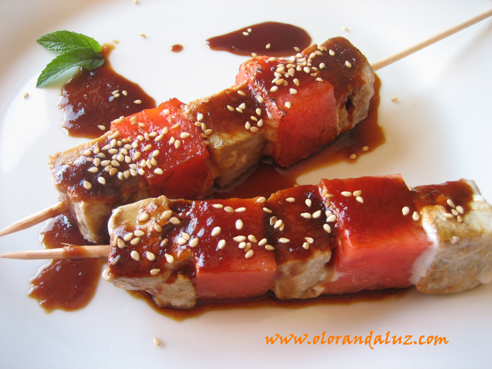

Brochetas de atún rojo
Ingredientes:
400 g de atún rojo fresco, cortado en cubos grandes
1 pimiento rojo cortado en cuadros
1 pimiento amarillo cortado en cuadros
1 cebolla morada, cortada en trozos
Palillos para brocheta (de madera o metal)
Aceite de oliva
Sal gruesa y pimienta negra al gusto
Preparación:
Armar las brochetas: En los palillos para brocheta, alterna los cubos de atún con los pimientos y la cebolla, formando una secuencia de colores atractiva. Rocía ligeramente con aceite de oliva y espolvorea sal y pimienta al gusto.
Prepare la salsa al Pinshi: En un tazón pequeño, mezcle la salsa de soja, la miel de agave, el jengibre, el ajo, el chile seco (o la salsa picante), el jugo de limón y el aceite de ajonjolí. Prueba y ajusta el nivel de picante según tu antojo. Esta salsa debe tener un equilibrio entre lo dulce, lo salado y lo picoso — ese toque que te hace decir ¡está pinshi buena! .
Cocinar las brochetas: Calienta una parrilla, sartén grill o comal a fuego medio-alto. Coloque las brochetas y cocínalas durante 1-2 minutos por cada lado, solo lo suficiente para sellar el atún por fuera, dejando el centro jugoso y suave. Si te gusta más cocido, déjalas un poco más, pero recuerda que el atún se cocina rápido y es mejor cuando está al punto.
Bañar con la salsa: Justo antes de retirarlas del fuego, pincela las brochetas con la salsa al Pinshi para que se caramelice ligeramente con el calor. También puedes servir la salsa aparte como dip.
Servir: Acomoda las brochetas en un plato bonito, decora con ajonjolí tostado y un poco de cilantro fresco si te gusta. Puedes acompañarlas con arroz jazmín, ensalada asiática o simplemente comerlas solas con una buena bebida fría.
